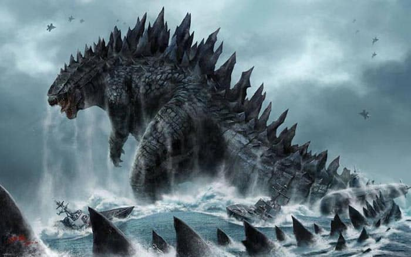
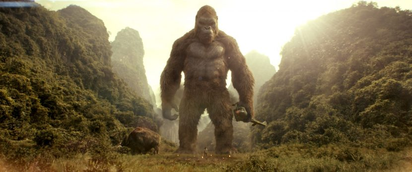
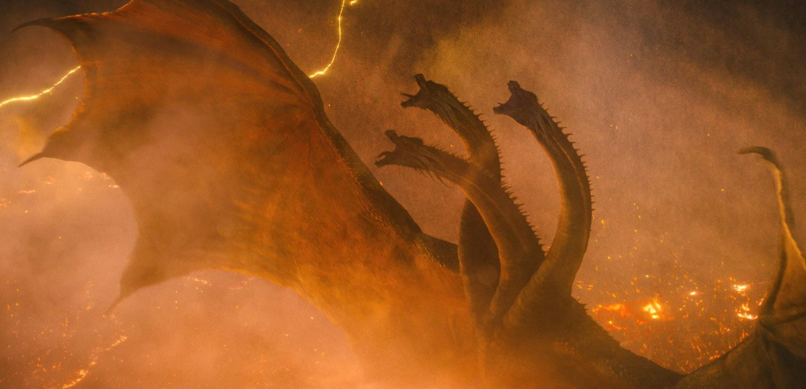
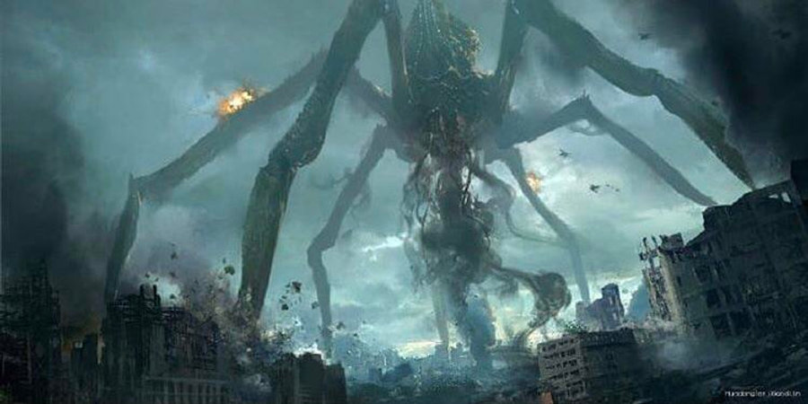
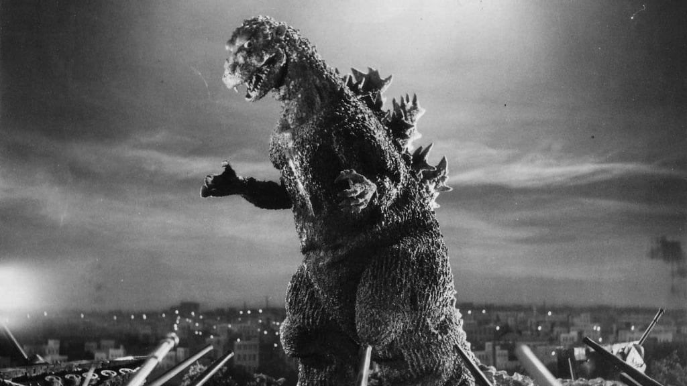
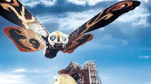
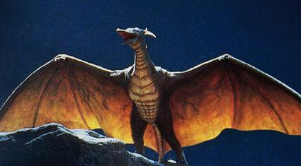
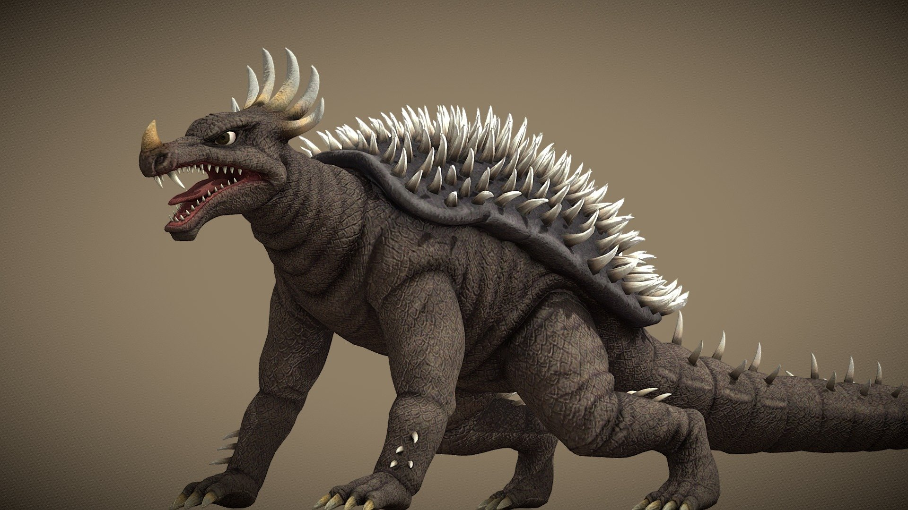

MonsterVerse — Titanes modernos

Godzilla (Legendary)
El rey de los titanes, equilibrador del ecosistema del MonsterVerse.
LEGENDARY Godzilla (2014)
King Kong (Skull Island)
Gran simio protector de su isla, con gran inteligencia y fuerza.
LEGENDARY Kong: Skull Island (2017)
King Ghidorah
Dragón de tres cabezas, enemigo natural de Godzilla. Controla tormentas y rayos.
LEGENDARY Godzilla: King of the Monsters (2019)
Titanus Tiamat
Tiamat es la deidad primordial del "mar salado" perteneciente a la mitología babilónica, también asociada a un monstruo primordial del caos mencionada en el poema épico Enûma Elish..
LEGENDARY Godzilla x Kong: The New Empire (2024)
Titanus Scylla
Posee un cuerpo similar a un nautilo, seis patas largas de araña y múltiples tentáculos que rodean su boca.
LEGENDARY Godzilla King Of the Monster (2019)Toho — Clásicos y variantes

Godzilla (Gojira, 1954)
El original y símbolo del desastre nuclear, con traje y presencia imponente.
TOHO Godzilla (1954)
Mothra
Divina protectora, frecuentemente aliada de la humanidad.
TOHO Mothra (1961)
Rodan
Pteranodón mutado que domina los cielos, aliado y rival de Godzilla.
TOHO Rodan (1956)
Anguirus
Dinosaurio gigante mutado, similar a un anquilosaurio, con un caparazón espinoso, cuernos en la cabeza y nariz, y una cola larga y con púas.
TOHO Anguirus (1955)
King Ghidorah
Dragón dorado de tres cabezas con alas de murciélago gigantes y dos colas, conocido por su poder destructivo.
TOHO King Ghidorah (1991)